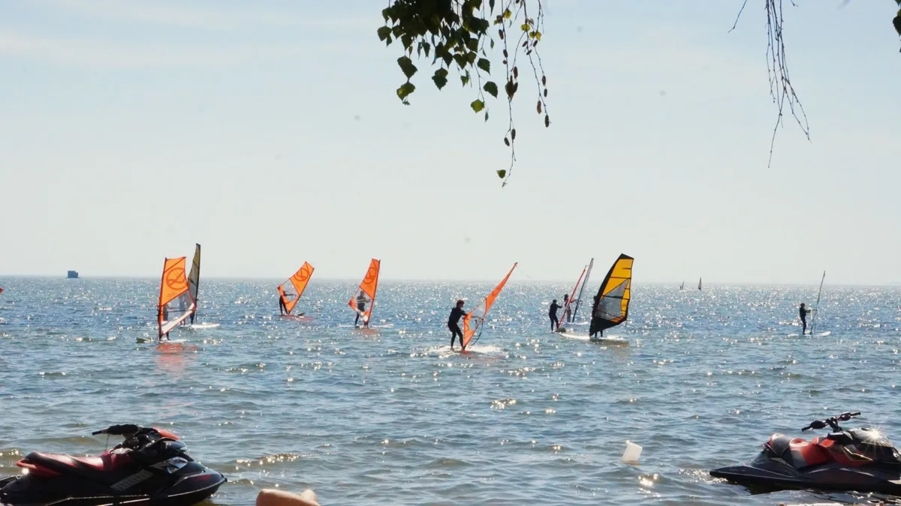
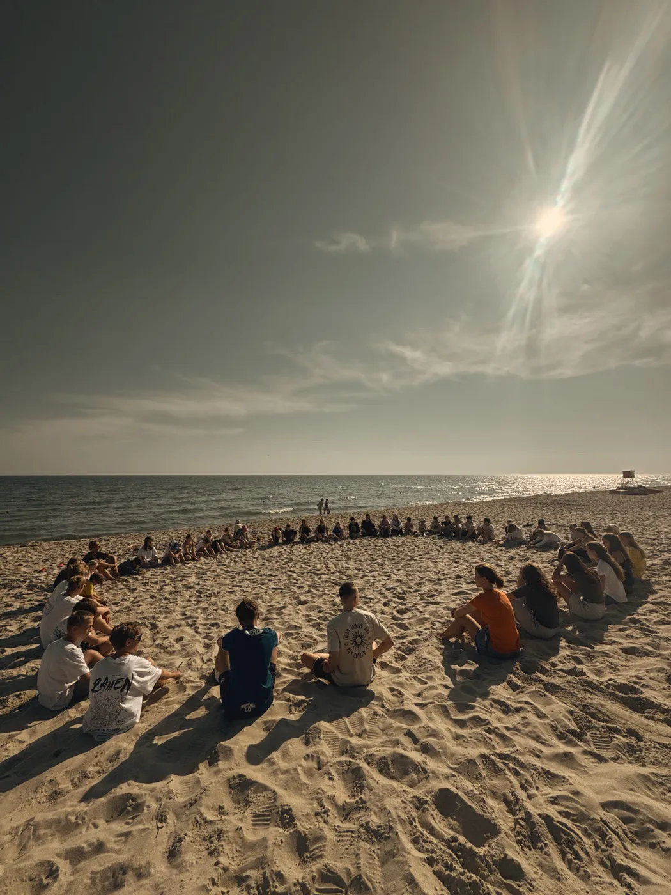
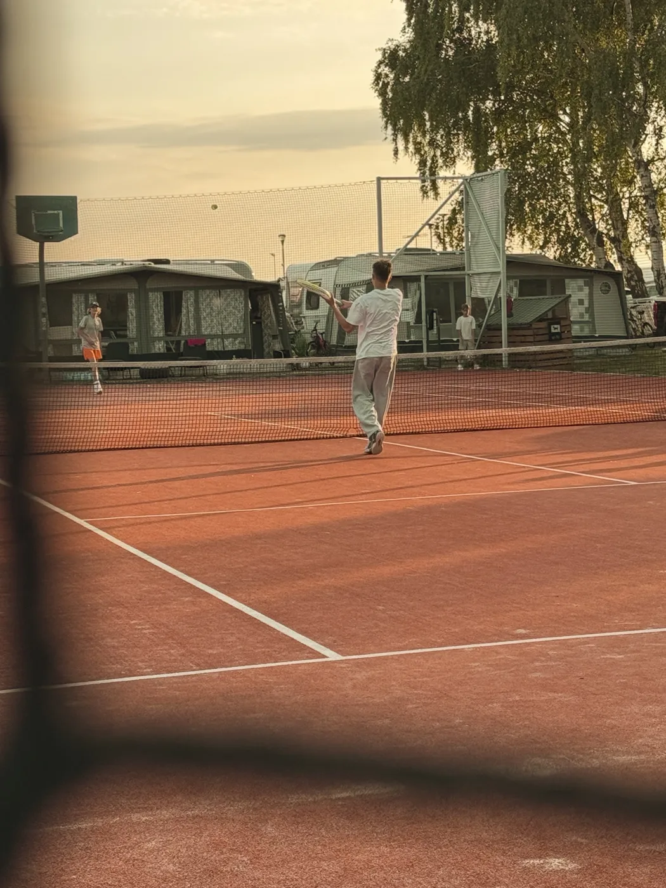
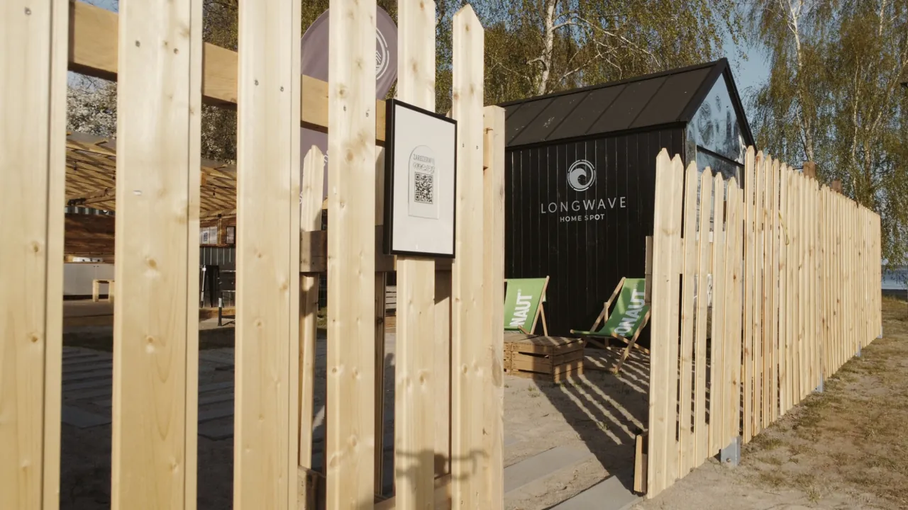
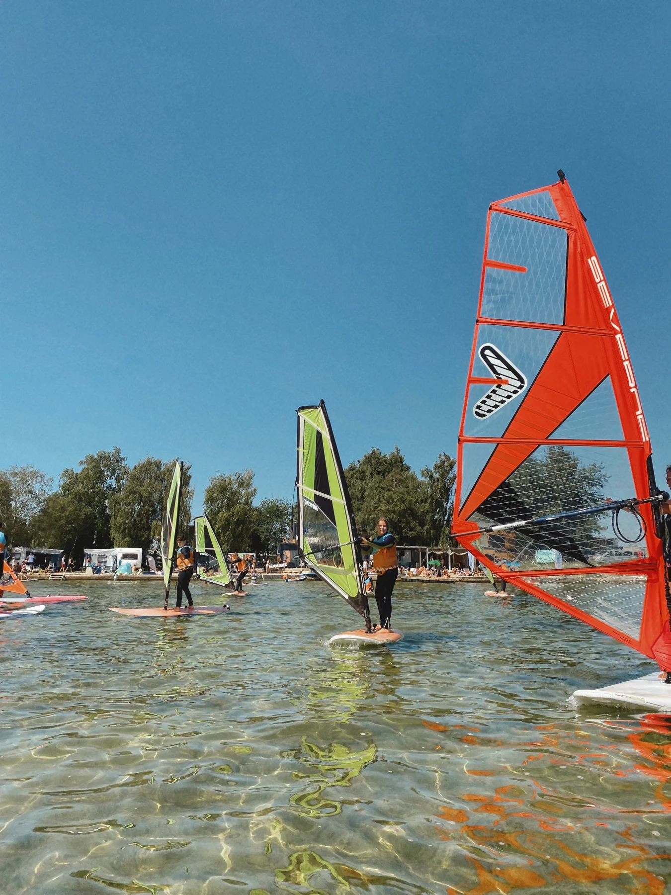

BAZA NOCLEGOWA LONGWAVE HOME SPOT
Nasze miejsce, nasza ekipa.

Jastarnia - FEELS LIKE HOME!
Wracamy na nasz ukochany Półwysep Helski! Jastarnia od lat zajmuje szczególne miejsce na mapie LONGWAVE.
To właśnie tutaj, w naszej bazie HOME SPOT, łączymy surferski klimat, aktywne wakacje i wszystko, co lubimy najbardziej.
Czekają na nas szkolenia sportów wodnych na płytkich wodach Zatoki Puckiej, warsztaty na deskach LONGWAVE, skimboard, kąpiele w morzu i pływanie na MEGA SUP-ie, nieziemskie zachody słońca. Do tego warsztaty pierwszej pomocy, wspólne aktywności i mnóstwo czasu spędzonego na świeżym powietrzu.
Dużo sportu, surferskiego luzu, ekstra ludzi i dobrej energii tak właśnie wygląda LONGWAVE CAMP w Jastarni!
Nasze miejsce, nasza ekipa.
W samym sercu Półwyspu Helskiego.
Ludzie, natura i dobra energia.
Zaledwie 10 metrów od bazy.
Siedem dni na Półwyspie Helskim, mnóstwo czasu na wodzie i prawdziwy surferski klimat!
To wyjazd, podczas którego stawiamy przede wszystkim na windsurfing, rozwijanie umiejętności i dobrą zabawę. Szkolimy się pod okiem doświadczonych instruktorów, na płytkich wodach Zatoki Puckiej - idealnym miejscu zarówno na pierwsze kroki, jak i dalszy progres.
Mieszkamy w naszej bazie LONGWAVE HOME SPOT, tuż obok szkółki sportów wodnych. Tworzymy kameralną ekipę około 30–40 osób, dzięki czemu szybko się poznajemy i działamy razem.
Poza szkoleniami czekają na nas SUP-y, warsztaty, wspólne wieczory i wszystkie walory, które wyróżniają Półwysep Helski.
Dla dzieci i młodzieży w wieku 7–15 lat.
Nieważne, czy to Twój pierwszy obóz, czy kolejny sezon z LONGWAVE - u nas na pewno się odnajdziesz!
Zapraszamy zarówno osoby początkujące, jak i te, które chcą doskonalić swoje umiejętności. Grupy tworzymy z uwzględnieniem wieku i umiejętności uczestników, dzięki czemu każdy może rozwijać się we własnym tempie, próbować nowych rzeczy i czerpać radość ze wspólnego działania.

Kadry LONGWAVE



Za LONGWAVE odpowiadają ludzie, którzy na co dzień pracują ze sportem, dziećmi i młodzieżą.
Naszą ekipę tworzą doświadczeni wychowawcy, instruktorzy sportów wodnych, nauczyciele wychowania fizycznego i ratownicy. Szkolenia windsurfingowe i kitesurfingowe prowadzone są we współpracy z profesjonalną szkółką - Akademia Windsurfingu Pana Nikodema
Stawiamy na kameralne grupy, indywidualne podejście i dobrą komunikację z rodzicami.
Po aktywnym dniu trzeba dobrze zjeść! A tutaj zjemy aż po korek! - POZDRAWIAMY EKIPE Z KUCHNI <3
Zapewniamy 3 posiłki dziennie - śniadanie, obiad + przekąskę i kolację serwowane w restauracji Kokosy na terenie campingu.
Przez cały pobyt uczestnicy mają nieograniczony dostęp do wody pitnej.
Dostępna jest również opcja diety wegetariańskiej za dodatkową opłatą.

Pobudka, toaleta poranna, poranny rozruch, joga.
Ładujemy baterie przed aktywnym dniem.
Warsztaty, gry zespołowe, zajęcia kreatywne
Szkolenie windsurfingowe z instruktorami, podział na grupy według umiejętności.
Przerwa na posiłek i chwilę odpoczynku - siesta (telefony)
Warsztaty, gry zespołowe, gra terenowa, zajęcia kreatywne, SUP, skimboard, plaża lub inne aktywności
Wspólny posiłek
Ognisko, film pod chmurką, integracja i wspólne podsumowanie dnia.
To przykładowy plan dnia. Harmonogram dostosowujemy do pogody, warunków wiatrowych i programu danego turnusu. W bezwietrzne dni korzystamy z alternatywnych aktywności.
Na wodzie, na lądzie i zawsze aktywnie! Program dopasowujemy do pogody, warunków na zatoce i możliwości grupy.

Na LONGWAVE CAMP stawiamy na wspólne spędzanie czasu, nowe znajomości i aktywności poza ekranem.
Dlatego telefony komórkowe udostępniamy uczestnikom raz dziennie na godzinę. To czas na kontakt z domem i podzielenie się wrażeniami.
Rodzice mogą być spokojni - kierownik obozu i wychowawcy pozostają do ich dyspozycji przez cały wyjazd.

Naszą bazą jest LONGWAVE HOME SPOT oraz LONGWAVE HOME SPOT 2.0 położony na terenie kempingu Molo Surf w Jastarni.
Mieszkamy w domkach urządzonych w surferskim stylu, z wygodnymi łóżkami i miejscem na rzeczy osobiste.
Jesteśmy blisko szkółki, zatoki i wszystkich najważniejszych atrakcji Półwyspu.
Na miejscu mamy przestrzeń do wspólnego spędzania czasu, odpoczynku i integracji.
To nie jest typowy ośrodek kolonijny. To nasza surferska baza, w której każdy szybko staje się częścią ekipy.
Lokalizacja: ul. Rybacka 33, Jastarnia.

Kadry LONGWAVE


Molo Surf Rybacka 33 Jastarnia
Otwórz trasę w Mapach GoogleNasze wartości
Budowanie marki oraz tak niezwykłej społeczności to spełnianie naszych marzeń. Budowanie i realizowanie wszystkich projektach jest w 100% odzwierciedleniem naszych wartości, szczerości, a co za tym idzie autentyczności.
Jako organizatorzy wyjazdów mamy już kilkuletnie doświadczenie, natomiast zanim sami zaczęliśmy organizować wypoczynek zebraliśmy ogromne doświadczenie pracy z dziećmi.
Cokolwiek robimy, robimy to na 100%. Od kolekcji ubrań, deski aż po wyjazdy. Dopinamy każdy szczegół. Wychodzimy z założenia, że to właśnie te małe “smaczki” mają największe znaczenie i to one między innymi wyróżniają nas na tle konkurencji.
Podstawowym materiałem naszych desek jest BAMBUS - jeden z najbardziej trwałych materiałów. Ten wybór to nie jest przypadek. Dotyczy to również doboru materiałów do kolekcji ubrań, które cieszą się ogromnym zainteresowaniem. Podczas wyjazdów to właśnie jakość jest głównym powodem dla, którego nasi uczestnicy wracają
Marka LONGWAVE to tworzenie nietuzinkowych projektów. Staramy się aby w każdym działaniu było coś więcej, coś wyjątkowego. Własny produkt, klasyczny design, jedyne w swoim rodzaju wyjazdy, nieszablonowe eventy.
Określenie R O D Z I N A LONGWAVE narodziło się od samych uczestników CAMPÓW. Tworzymy rodzinę - społeczność, którą łączy wspólna pasja do życia na 100% Czujemy ogromną wdzięczność za to jakich ludzi przyciągamy i jak niezwykła społeczność tworzy się wokół marki LONGWAVE
Wszystkie nasze działania kierują się pozytywnym nastawieniem oraz pozytywną energią wypełniającą każde nasze przedsięwzięcie.
Do współpracy zapraszamy ludzi z bogatym doświadczeniem, kwalifikacjami oraz profesjonalnym podejściem. Sami stawiamy na ciągły rozwój na wielu płaszczyznach dotyczących naszej marki.
Twój kolejny wyjazd
Zapisy odbywają się w aplikacji LONGWAVE. Przy aktywnym terminie przejdziesz bezpośrednio do oferty.
Przy zapowiedziach zapisy nie są jeszcze otwarte.

CampJastarnia
26.06 – 03.07.2027
7–15 lat
Jastarnia
03.07 – 10.07.2027
7–15 lat
Jastarnia
10.07 – 17.07.2027
7–15 lat
Jastarnia
17.07 – 24.07.2027
7–15 lat
Jastarnia
24.07 – 31.07.2027
7–15 lat
Jastarnia
31.07 – 07.08.2027
7–15 lat
Jastarnia
07.08 – 14.08.2027
7–15 lat
Jastarnia
14.08 – 21.08.2027
7–15 lat
Chcesz połączyć sąsiednie turnusy? Ustalimy możliwość dłuższego pobytu indywidualnie.
Wybierz interesujący Cię wyjazd i termin, a następnie kliknij „Sprawdź terminy” lub „Zarezerwuj”. System przeprowadzi Cię przez kolejne etapy rezerwacji w aplikacji LONGWAVE.
Nie! Wszystkie oferty, terminy i najważniejsze informacje możesz przeglądać bez logowania. Konto jest potrzebne do obsługi rezerwacji i dokumentów.
W aplikacji LONGWAVE. To tam możesz sprawdzić informacje o swoim wyjeździe oraz dokumenty i płatności powiązane z rezerwacją.
Tak, możesz zgłosić więcej niż jednego uczestnika. Dostępność miejsc oraz sposób rezerwacji sprawdzisz przy wybranym terminie.
Najlepiej skontaktuj się z nami. Sprawdzimy, czy dostępny jest inny termin lub podobny wyjazd.
Tak, możliwość i warunki rezygnacji określa umowa oraz regulamin danego wyjazdu. Przed rezerwacją warto zapoznać się z obowiązującymi zasadami.
Porozmawiajmy o Twoim wyjeździe
Opowiedz nam, co planujesz. Pomożemy dobrać wyjazd, termin lub program dla Twojej grupy.